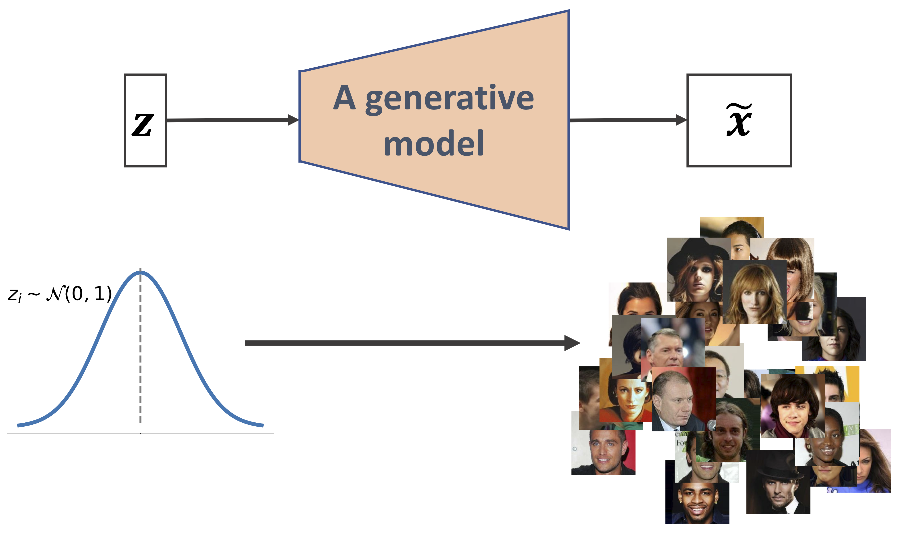
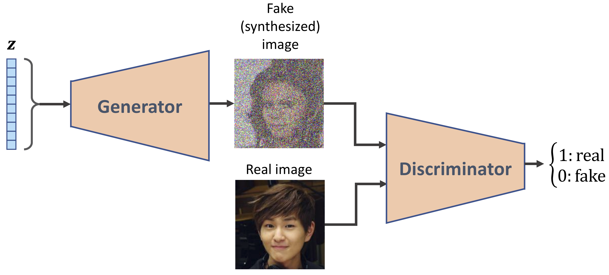
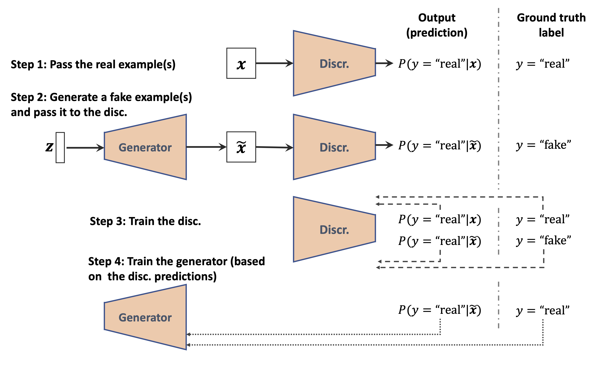

Diffusion models are inspired by non-equilibrium thermodynamics. They define a Markov chain of diffusion steps to slowly add random noise to data and then learn to reverse the diffusion process to construct desired data samples from the noise. Unlike VAE or flow models, diffusion models are learned with a fixed procedure and the latent variable has high dimensionality (same as the original data).
Diffusion models are prominent in generating high-quality images, video, sound, etc. They are named for their similarity to the natural diffusion process in physics, which describes how molecules move from high-concentration to low-concentration areas. In the context of machine learning, diffusion models generate new data by reversing a diffusion process, that is information loss due to noise intervention. The main idea here is to add random noise to data and then undo the process to get the original data distribution from the noisy data.
The famous DALL-E 2, Midjourney, and open-source Stable Diffusion that create realistic images based on the user's text input are all examples of diffusion models.
Diffusion models are advanced machine learning algorithms that uniquely generate high-quality data by progressively adding noise to a dataset and then learning to reverse this process. This innovative approach enables them to create remarkably accurate and detailed outputs, from lifelike images to coherent text sequences. Central to their function is the concept of gradually degrading data quality, only to reconstruct it to its original form or transform it into something new. This technique enhances the fidelity of generated data and offers new possibilities in areas like medical imaging, autonomous vehicles, and personalized AI assistants.
Historically, probabilistic models suffer from a tradeoff between two conflicting objectives: tractability and flexibility. Models that are tractable can be analytically evaluated and easily fit to data (e.g. a Gaussian or Laplace). However, these models are unable to aptly describe structure in rich datasets. On the other hand, models that are flexible can be molded to fit structure in arbitrary data. For example, we can define models in terms of any (non-negative) function \( \phi(\boldsymbol{x}) \) yielding the flexible distribution
$$
p\left(\boldsymbol{x}\right) =\frac{\phi\left(\boldsymbol{x} \right)}{Z},
$$
where \( Z \) is a normalization constant. However, computing this normalization constant is generally intractable. Evaluating, training, or drawing samples from such flexible models typically requires a very expensive Monte Carlo process.
Diffusion models have several interesting features
In the original formulation, one uses a Markov chain to gradually convert one distribution into another, an idea used in non-equilibrium statistical physics and sequential Monte Carlo. Diffusion models build a generative Markov chain which converts a simple known distribution (e.g. a Gaussian) into a target (data) distribution using a diffusion process. Rather than use this Markov chain to approximately evaluate a model which has been otherwise defined, one can explicitly define the probabilistic model as the endpoint of the Markov chain. Since each step in the diffusion chain has an analytically evaluable probability, the full chain can also be analytically evaluated.
Learning in this framework involves estimating small perturbations to a diffusion process. Estimating small, analytically tractable, perturbations is more tractable than explicitly describing the full distribution with a single, non-analytically-normalizable, potential function. Furthermore, since a diffusion process exists for any smooth target distribution, this method can capture data distributions of arbitrary form.
Diffusion models work in a dual-phase mechanism: They first train a neural network to introduce noise into the dataset(a staple in the forward diffusion process) and then methodically reverse this process.
Before the diffusion process begins, data needs to be appropriately formatted for model training. This process involves data cleaning to remove outliers, data normalization to scale features consistently, and data augmentation to increase dataset diversity, especially in the case of image data. Standardization is also applied to achieve normal data distribution, which is important for handling noisy image data. Different data types, such as text or images, may require specific preprocessing steps, like addressing class-imbalance issues. Well-executed data processing ensures high-quality training data and contributes to the model's ability to learn meaningful patterns and generate high-quality images (or other data types) during inference.
Let us go back our discussions of the variational autoencoders from the lecture of April 24, see https://github.com/CompPhysics/AdvancedMachineLearning/blob/main/doc/pub/week14/ipynb/week14.ipynb. As a first attempt at understanding diffusion models, we can think of these as stacked VAEs, or better, recursive VAEs.
Let us try to see why. As an intermediate step, we consider so-called hierarchical VAEs, which can be seen as a generalization of VAEs that include multiple hierarchies of latent spaces.
Note: Many of the derivations and figures here are inspired and borrowed from the excellent exposition of diffusion models by Calvin Luo at https://arxiv.org/abs/2208.11970.
Markovian VAEs represent a generative process where we use Markov chain to build a hierarchy of VAEs.
Each transition down the hierarchy is Markovian, where we decode each latent set of variables \( \boldsymbol{h}_t \) in terms of the previous latent variable \( \boldsymbol{h}_{t-1} \). Intuitively, and visually, this can be seen as simply stacking VAEs on top of each other (see figure next slide).
One can think of such a model as a recursive VAE.
Mathematically, we represent the joint distribution and the posterior of a Markovian VAE as
$$
\begin{align*}
p(\boldsymbol{x}, \boldsymbol{h}_{1:T}) &= p(\boldsymbol{h}_T)p_{\boldsymbol{\theta}}(\boldsymbol{x}|\boldsymbol{h}_1)\prod_{t=2}^{T}p_{\boldsymbol{\theta}}(\boldsymbol{h}_{t-1}|\boldsymbol{h}_{t})\\
q_{\boldsymbol{\phi}}(\boldsymbol{h}_{1:T}|\boldsymbol{x}) &= q_{\boldsymbol{\phi}}(\boldsymbol{h}_1|\boldsymbol{x})\prod_{t=2}^{T}q_{\boldsymbol{\phi}}(\boldsymbol{h}_{t}|\boldsymbol{h}_{t-1})
\end{align*}
$$
We can then define the marginal probability we want to optimize as
$$ \begin{align*} \log p(\boldsymbol{x}) &= \log \int p(\boldsymbol{x}, \boldsymbol{h}_{1:T}) d\boldsymbol{h}_{1:T} \\ &= \log \int \frac{p(\boldsymbol{x}, \boldsymbol{h}_{1:T})q_{\boldsymbol{\phi}}(\boldsymbol{h}_{1:T}|\boldsymbol{x})}{q_{\boldsymbol{\phi}}(\boldsymbol{h}_{1:T}|\boldsymbol{x})} d\boldsymbol{h}_{1:T} && \text{(Multiply by 1 = $\frac{q_{\boldsymbol{\phi}}(\boldsymbol{h}_{1:T}|\boldsymbol{x})}{q_{\boldsymbol{\phi}}(\boldsymbol{h}_{1:T}|\boldsymbol{x})}$)}\\ &= \log \mathbb{E}_{q_{\boldsymbol{\phi}}(\boldsymbol{h}_{1:T}|\boldsymbol{x})}\left[\frac{p(\boldsymbol{x}, \boldsymbol{h}_{1:T})}{q_{\boldsymbol{\phi}}(\boldsymbol{h}_{1:T}|\boldsymbol{x})}\right] && \text{(Definition of Expectation)}\\ &\geq \mathbb{E}_{q_{\boldsymbol{\phi}}(\boldsymbol{h}_{1:T}|\boldsymbol{x})}\left[\log \frac{p(\boldsymbol{x}, \boldsymbol{h}_{1:T})}{q_{\boldsymbol{\phi}}(\boldsymbol{h}_{1:T}|\boldsymbol{x})}\right] && \text{(Discussed last week)} \end{align*} $$A Markovian hierarchical Variational Autoencoder with \( T \) hierarchical latents. The generative process is modeled as a Markov chain, where each latent \( \boldsymbol{h}_t \) is generated only from the previous latent \( \boldsymbol{h}_{t+1} \). Here \( \boldsymbol{z} \) is our latent variable \( \boldsymbol{h} \).

We obtain then
$$
\begin{align*}
\mathbb{E}_{q_{\boldsymbol{\phi}}(\boldsymbol{h}_{1:T}|\boldsymbol{x})}\left[\log \frac{p(\boldsymbol{x}, \boldsymbol{h}_{1:T})}{q_{\boldsymbol{\phi}}(\boldsymbol{h}_{1:T}|\boldsymbol{x})}\right]
&= \mathbb{E}_{q_{\boldsymbol{\phi}}(\boldsymbol{h}_{1:T}|\boldsymbol{x})}\left[\log \frac{p(\boldsymbol{h}_T)p_{\boldsymbol{\theta}}(\boldsymbol{x}|\boldsymbol{h}_1)\prod_{t=2}^{T}p_{\boldsymbol{\theta}}(\boldsymbol{h}_{t-1}|\boldsymbol{h}_{t})}{q_{\boldsymbol{\phi}}(\boldsymbol{h}_1|\boldsymbol{x})\prod_{t=2}^{T}q_{\boldsymbol{\phi}}(\boldsymbol{h}_{t}|\boldsymbol{h}_{t-1})}\right]
\end{align*}
$$
We will modify this equation when we discuss what are normally called Variational Diffusion Models.
The easiest way to think of a Variational Diffusion Model (VDM) is as a Markovian Hierarchical Variational Autoencoder with three key restrictions:
The VDM posterior is
$$
\begin{align*}
q(\boldsymbol{x}_{1:T}|\boldsymbol{x}_0) = \prod_{t = 1}^{T}q(\boldsymbol{x}_{t}|\boldsymbol{x}_{t-1})
\end{align*}
$$
The distribution of each latent variable in the encoder is a Gaussian centered around its previous hierarchical latent. Here then, the structure of the encoder at each timestep \( t \) is not learned; it is fixed as a linear Gaussian model, where the mean and standard deviation can be set beforehand as hyperparameters, or learned as parameters.
We parameterize the Gaussian encoder with mean \( \boldsymbol{\mu}_t(\boldsymbol{x}_t) = \sqrt{\alpha_t} \boldsymbol{x}_{t-1} \), and variance \( \boldsymbol{\Sigma}_t(\boldsymbol{x}_t) = (1 - \alpha_t) \textbf{I} \), where the form of the coefficients are chosen such that the variance of the latent variables stay at a similar scale; in other words, the encoding process is variance-preserving.
Note that alternate Gaussian parameterizations are allowed, and lead to similar derivations. The main takeaway is that \( \alpha_t \) is a (potentially learnable) coefficient that can vary with the hierarchical depth \( t \), for flexibility.
Mathematically, the encoder transitions are defined as
$$
\begin{align*}
q(\boldsymbol{x}_{t}|\boldsymbol{x}_{t-1}) = \mathcal{N}(\boldsymbol{x}_{t} ; \sqrt{\alpha_t} \boldsymbol{x}_{t-1}, (1 - \alpha_t) \textbf{I}) \tag{1}
\end{align*}
$$
From the third assumption, we know that \( \alpha_t \) evolves over time according to a fixed or learnable schedule structured such that the distribution of the final latent \( p(\boldsymbol{x}_T) \) is a standard Gaussian. We can then update the joint distribution of a Markovian VAE to write the joint distribution for a VDM as
$$
\begin{align*}
p(\boldsymbol{x}_{0:T}) &= p(\boldsymbol{x}_T)\prod_{t=1}^{T}p_{\boldsymbol{\theta}}(\boldsymbol{x}_{t-1}|\boldsymbol{x}_t) \\
\text{where,}&\nonumber\\
p(\boldsymbol{x}_T) &= \mathcal{N}(\boldsymbol{x}_T; \boldsymbol{0}, \textbf{I})
\end{align*}
$$
Collectively, what this set of assumptions describes is a steady noisification of an image input over time. We progressively corrupt an image by adding Gaussian noise until eventually it becomes completely identical to pure Gaussian noise. See figure on next slide.

Note that our encoder distributions \( q(\boldsymbol{x}_t|\boldsymbol{x}_{t-1}) \) are no longer parameterized by \( \boldsymbol{\phi} \), as they are completely modeled as Gaussians with defined mean and variance parameters at each timestep. Therefore, in a VDM, we are only interested in learning conditionals \( p_{\boldsymbol{\theta}}(\boldsymbol{x}_{t-1}|\boldsymbol{x}_{t}) \), so that we can simulate new data. After optimizing the VDM, the sampling procedure is as simple as sampling Gaussian noise from \( p(\boldsymbol{x}_T) \) and iteratively running the denoising transitions \( p_{\boldsymbol{\theta}}(\boldsymbol{x}_{t-1}|\boldsymbol{x}_{t}) \) for \( T \) steps to generate a novel \( \boldsymbol{x}_0 \).
$$
\begin{align*}
\log p(\boldsymbol{x})
&= \log \int p(\boldsymbol{x}_{0:T}) d\boldsymbol{x}_{1:T}\\
&= \log \int \frac{p(\boldsymbol{x}_{0:T})q(\boldsymbol{x}_{1:T}|\boldsymbol{x}_0)}{q(\boldsymbol{x}_{1:T}|\boldsymbol{x}_0)} d\boldsymbol{x}_{1:T}\\
&= \log \mathbb{E}_{q(\boldsymbol{x}_{1:T}|\boldsymbol{x}_0)}\left[\frac{p(\boldsymbol{x}_{0:T})}{q(\boldsymbol{x}_{1:T}|\boldsymbol{x}_0)}\right]\\
&\geq {\mathbb{E}_{q(\boldsymbol{x}_{1:T}|\boldsymbol{x}_0)}\left[\log \frac{p(\boldsymbol{x}_{0:T})}{q(\boldsymbol{x}_{1:T}|\boldsymbol{x}_0)}\right]}\\
&= {\mathbb{E}_{q(\boldsymbol{x}_{1:T}|\boldsymbol{x}_0)}\left[\log \frac{p(\boldsymbol{x}_T)\prod_{t=1}^{T}p_{\boldsymbol{\theta}}(\boldsymbol{x}_{t-1}|\boldsymbol{x}_t)}{\prod_{t = 1}^{T}q(\boldsymbol{x}_{t}|\boldsymbol{x}_{t-1})}\right]}\\
&= {\mathbb{E}_{q(\boldsymbol{x}_{1:T}|\boldsymbol{x}_0)}\left[\log \frac{p(\boldsymbol{x}_T)p_{\boldsymbol{\theta}}(\boldsymbol{x}_0|\boldsymbol{x}_1)\prod_{t=2}^{T}p_{\boldsymbol{\theta}}(\boldsymbol{x}_{t-1}|\boldsymbol{x}_t)}{q(\boldsymbol{x}_T|\boldsymbol{x}_{T-1})\prod_{t = 1}^{T-1}q(\boldsymbol{x}_{t}|\boldsymbol{x}_{t-1})}\right]}\\
&= {\mathbb{E}_{q(\boldsymbol{x}_{1:T}|\boldsymbol{x}_0)}\left[\log \frac{p(\boldsymbol{x}_T)p_{\boldsymbol{\theta}}(\boldsymbol{x}_0|\boldsymbol{x}_1)\prod_{t=1}^{T-1}p_{\boldsymbol{\theta}}(\boldsymbol{x}_{t}|\boldsymbol{x}_{t+1})}{q(\boldsymbol{x}_T|\boldsymbol{x}_{T-1})\prod_{t = 1}^{T-1}q(\boldsymbol{x}_{t}|\boldsymbol{x}_{t-1})}\right]}\\
&= {\mathbb{E}_{q(\boldsymbol{x}_{1:T}|\boldsymbol{x}_0)}\left[\log \frac{p(\boldsymbol{x}_T)p_{\boldsymbol{\theta}}(\boldsymbol{x}_0|\boldsymbol{x}_1)}{q(\boldsymbol{x}_T|\boldsymbol{x}_{T-1})}\right] + \mathbb{E}_{q(\boldsymbol{x}_{1:T}|\boldsymbol{x}_0)}\left[\log \prod_{t = 1}^{T-1}\frac{p_{\boldsymbol{\theta}}(\boldsymbol{x}_{t}|\boldsymbol{x}_{t+1})}{q(\boldsymbol{x}_{t}|\boldsymbol{x}_{t-1})}\right]}\\
\end{align*}
$$
$$
\begin{align*}
\log p(\boldsymbol{x})
&= {\mathbb{E}_{q(\boldsymbol{x}_{1:T}|\boldsymbol{x}_0)}\left[\log \frac{p(\boldsymbol{x}_T)p_{\boldsymbol{\theta}}(\boldsymbol{x}_0|\boldsymbol{x}_1)}{q(\boldsymbol{x}_T|\boldsymbol{x}_{T-1})}\right] + \mathbb{E}_{q(\boldsymbol{x}_{1:T}|\boldsymbol{x}_0)}\left[\log \prod_{t = 1}^{T-1}\frac{p_{\boldsymbol{\theta}}(\boldsymbol{x}_{t}|\boldsymbol{x}_{t+1})}{q(\boldsymbol{x}_{t}|\boldsymbol{x}_{t-1})}\right]}\\
&= {\mathbb{E}_{q(\boldsymbol{x}_{1:T}|\boldsymbol{x}_0)}\left[\log p_{\boldsymbol{\theta}}(\boldsymbol{x}_0|\boldsymbol{x}_1)\right] + \mathbb{E}_{q(\boldsymbol{x}_{1:T}|\boldsymbol{x}_0)}\left[\log \frac{p(\boldsymbol{x}_T)}{q(\boldsymbol{x}_T|\boldsymbol{x}_{T-1})}\right] + \mathbb{E}_{q(\boldsymbol{x}_{1:T}|\boldsymbol{x}_0)}\left[ \sum_{t=1}^{T-1} \log \frac{p_{\boldsymbol{\theta}}(\boldsymbol{x}_{t}|\boldsymbol{x}_{t+1})}{q(\boldsymbol{x}_{t}|\boldsymbol{x}_{t-1})}\right]}\\
&= {\mathbb{E}_{q(\boldsymbol{x}_{1:T}|\boldsymbol{x}_0)}\left[\log p_{\boldsymbol{\theta}}(\boldsymbol{x}_0|\boldsymbol{x}_1)\right] + \mathbb{E}_{q(\boldsymbol{x}_{1:T}|\boldsymbol{x}_0)}\left[\log \frac{p(\boldsymbol{x}_T)}{q(\boldsymbol{x}_T|\boldsymbol{x}_{T-1})}\right] + \sum_{t=1}^{T-1}\mathbb{E}_{q(\boldsymbol{x}_{1:T}|\boldsymbol{x}_0)}\left[ \log \frac{p_{\boldsymbol{\theta}}(\boldsymbol{x}_{t}|\boldsymbol{x}_{t+1})}{q(\boldsymbol{x}_{t}|\boldsymbol{x}_{t-1})}\right]}\\
&= {\mathbb{E}_{q(\boldsymbol{x}_{1}|\boldsymbol{x}_0)}\left[\log p_{\boldsymbol{\theta}}(\boldsymbol{x}_0|\boldsymbol{x}_1)\right] + \mathbb{E}_{q(\boldsymbol{x}_{T-1}, \boldsymbol{x}_T|\boldsymbol{x}_0)}\left[\log \frac{p(\boldsymbol{x}_T)}{q(\boldsymbol{x}_T|\boldsymbol{x}_{T-1})}\right] + \sum_{t=1}^{T-1}\mathbb{E}_{q(\boldsymbol{x}_{t-1}, \boldsymbol{x}_t, \boldsymbol{x}_{t+1}|\boldsymbol{x}_0)}\left[\log \frac{p_{\boldsymbol{\theta}}(\boldsymbol{x}_{t}|\boldsymbol{x}_{t+1})}{q(\boldsymbol{x}_{t}|\boldsymbol{x}_{t-1})}\right]}\\
\end{align*}
$$
These equations can be interpreted as

The cost of optimizing a VDM is primarily dominated by the third term, since we must optimize over all timesteps \( t \).
Under this derivation, all three terms are computed as expectations, and can therefore be approximated using Monte Carlo estimates. However, actually optimizing the ELBO using the terms we just derived might be suboptimal; because the consistency term is computed as an expectation over two random variables \( \left\{\boldsymbol{x}_{t-1}, \boldsymbol{x}_{t+1}\right\} \) for every timestep, the variance of its Monte Carlo estimate could potentially be higher than a term that is estimated using only one random variable per timestep. As it is computed by summing up \( T-1 \) consistency terms, the final estimated value may have high variance for large \( T \) values.
An advantage of diffusion models over for example VAEs (and also GANs to be discussed next time) is the ease of training with simple and efficient loss functions and their ability to generate highly realistic images. They excel at closely matching the distribution of real images, outperforming GANs in this aspect. This proficiency is due to the distinct mechanisms in diffusion models, allowing for more precise replication of real-world imagery.
Regarding training stability, generative diffusion models have an edge over GANs. GANs often struggle with mode collapse, which is a limitation where they produce a limited output variety. Diffusion models effectively avoid this issue through their gradual data smoothing process, leading to a more diverse range of generated images.
It is also important to mention that diffusion models handle various input types. They perform diverse generative tasks like text-to-image synthesis, layout-to-image generation, inpainting, and super-resolution tasks.
Denoising diffusion probabilistic models (DDPMs) are a specific type of diffusion model that focuses on probabilistically removing noise from data. During training, they learn how noise is added to data over time and how to reverse this process to recover the original data. This involves using probabilities to make educated guesses about what the data looked like before noise was added. This approach is essential for the model's capability to accurately reconstruct data, ensuring the outputs aren’t just noise-free but also closely resemble the original data.
Generating a sample from DDPM using the reverse diffusion process is quite slow because it involves many steps, possibly up to a thousand. For instance, according to Song et al. (2020), it takes about 20 hours to generate 50,000 small images with a DDPM, while a GAN can create the same amount in less than a minute using an Nvidia 2080 Ti GPU.
There is an alternative method called Denoising Diffusion Implicit Model (DDIM) that stands out for its efficiency and quality. Unlike traditional models, DDIM needs fewer steps to create clear images from noisy data.
There are very diverse applications of diffusion models, one of the most exciting being digital art creation. The document at https://www.superannotate.com/blog/diffusion-models#:~:text=A%20primary%20advantage%20of%20diffusion,to%20generate%20highly%20realistic%20images gives many nice examples of applications. .
The code covers:
This example is adapted from several open-source tutorials and implementations, demonstrating how to build a diffusion model from scratch in under 200 lines of PyTorch. I have borrowed extensively from
UNet is a type of convolutional neural network (CNN) Architecture that is primarily used for image segmentation tasks. See https://en.wikipedia.org/wiki/U-Net or https://www.sciencedirect.com/topics/computer-science/u-net
Diffusion models gradually corrupt data by adding Gaussian noise over a sequence of timesteps and then learn to reverse this noising process with a neural network.
The corruption schedule is typically linear or cosine in variance.
During training, the network is optimized to predict the original noise added at each timestep, using a mean-squared error loss.
At inference, one starts from random noise and iteratively applies the learned denoising steps to generate new samples.
import torch
import torch.nn as nn
import torch.nn.functional as F
from torchvision import datasets, transforms
from torch.utils.data import DataLoader
import matplotlib.pyplot as plt
import math
device = 'cuda' if torch.cuda.is_available() else 'cpu'
# Training settings
batch_size = 128
epochs = 5
lr = 2e-4
img_size = 28
channels = 1
# Diffusion hyperparameters
T = 300 # number of diffusion steps [oai_citation:5‡Medium](https://papers-100-lines.medium.com/diffusion-models-from-scratch-mnist-data-tutorial-in-100-lines-of-pytorch-code-a609e1558cee?utm_source=chatgpt.com)
beta_start, beta_end = 1e-4, 0.02
betas = torch.linspace(beta_start, beta_end, T, device=device) # linear schedule [oai_citation:6‡Medium](https://medium.com/data-science/diffusion-model-from-scratch-in-pytorch-ddpm-9d9760528946?utm_source=chatgpt.com)
alphas = 1. - betas
alphas_cumprod = torch.cumprod(alphas, dim=0)
transform = transforms.Compose([
transforms.ToTensor(),
transforms.Normalize((0.5,), (0.5,)),
])
train_ds = datasets.MNIST('.', train=True, download=True, transform=transform)
train_loader = DataLoader(train_ds, batch_size=batch_size, shuffle=True)
We present a lightweight U-Net inspired model for noise prediction:
class SimpleUNet(nn.Module):
def __init__(self, c):
super().__init__()
self.enc1 = nn.Conv2d(c, 64, 3, padding=1)
self.enc2 = nn.Conv2d(64, 128, 3, padding=1)
self.dec1 = nn.ConvTranspose2d(128, 64, 3, padding=1)
self.dec2 = nn.ConvTranspose2d(64, c, 3, padding=1)
self.act = nn.ReLU()
# timestep embedding to condition on t
self.time_mlp = nn.Sequential(nn.Linear(1, 128), nn.ReLU(),nn.Linear(128, 128))
def forward(self, x, t):
# x: [B, C, H, W], t: [B]
h = self.act(self.enc1(x))
h = self.act(self.enc2(h))
# add time embedding
t = t.unsqueeze(-1)
temb = self.time_mlp(t)
temb = temb.view(-1, 128, 1, 1)
h = h + temb
h = self.act(self.dec1(h))
return self.dec2(h)
def q_sample(x0, t, noise=None):
"""Add noise to x0 at timestep t."""
if noise is None:
noise = torch.randn_like(x0)
sqrt_acp = alphas_cumprod[t]**0.5
sqrt_1macp = (1 - alphas_cumprod[t])**0.5
return sqrt_acp.view(-1,1,1,1)*x0 + sqrt_1macp.view(-1,1,1,1)*noise
def diffusion_loss(model, x0):
"""Compute MSE between predicted noise and true noise."""
B = x0.size(0)
t = torch.randint(0, T, (B,), device=device).long()
noise = torch.randn_like(x0)
x_noisy = q_sample(x0, t, noise)
pred_noise = model(x_noisy, t.float()/T)
return F.mse_loss(pred_noise, noise)
model = SimpleUNet(channels).to(device)
opt = torch.optim.Adam(model.parameters(), lr=lr)
for epoch in range(epochs):
total_loss = 0
for x, _ in train_loader:
x = x.to(device)
loss = diffusion_loss(model, x)
opt.zero_grad()
loss.backward()
opt.step()
total_loss += loss.item()
print(f"Epoch {epoch+1}/{epochs}, Loss: {total_loss/len(train_loader):.4f}")
@torch.no_grad()
def p_sample_loop(model, shape):
x = torch.randn(shape, device=device)
for i in reversed(range(T)):
t = torch.full((shape[0],), i, device=device).float()/T
eps_pred = model(x, t)
beta_t = betas[i]
alpha_t = alphas[i]
acp_t = alphas_cumprod[i]
coef1 = 1 / alpha_t.sqrt()
coef2 = beta_t / ( (1 - acp_t).sqrt() )
x = coef1*(x - coef2*eps_pred)
if i > 0:
z = torch.randn_like(x)
sigma = beta_t.sqrt()
x = x + sigma*z
return x
# Generate samples
samples = p_sample_loop(model, (16, channels, img_size, img_size))
samples = samples.clamp(-1,1).cpu()
grid = torchvision.utils.make_grid(samples, nrow=4, normalize=True)
plt.figure(figsize=(5,5))
plt.imshow(grid.permute(1,2,0))
plt.axis('off')
For more details and implementations, see Calvin Luo at https://arxiv.org/abs/2208.11970